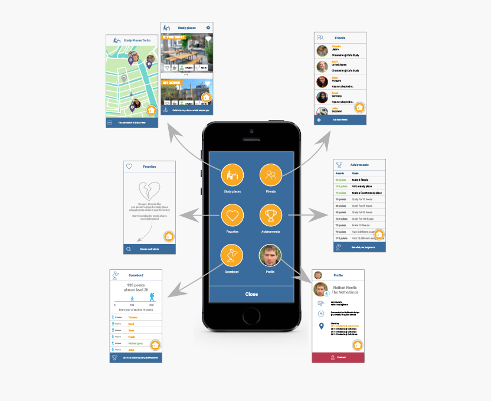
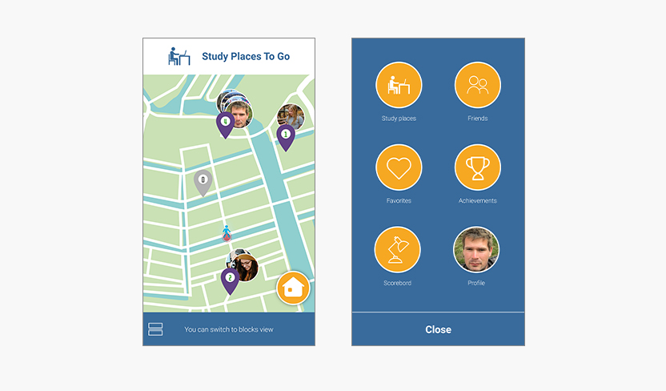
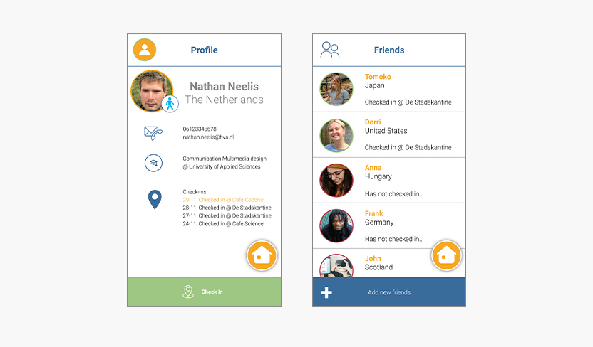
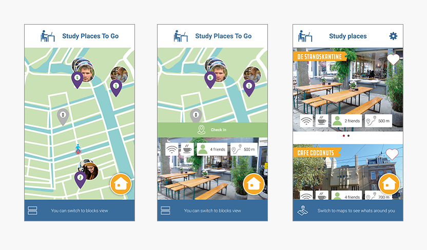
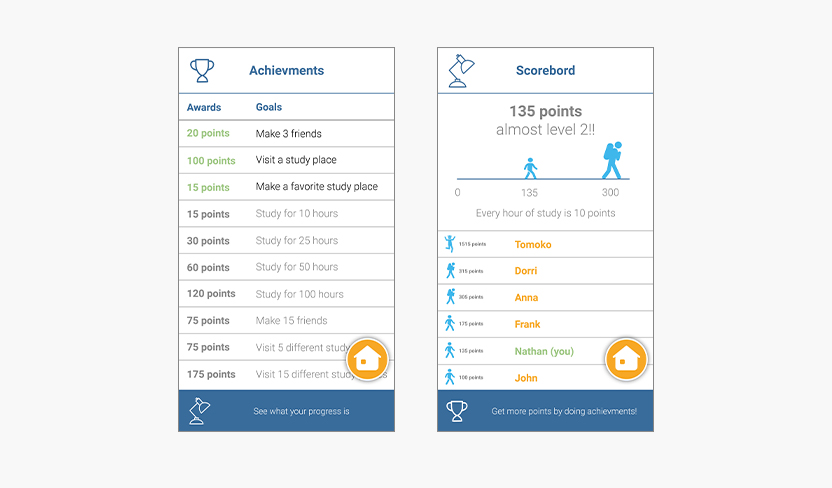

Het tweede grote project dat we in ons eerste jaar krijgen is het maken van een digitale component voor het "International Student Guide Amsterdam" boekje. Dit boekje krijgen de internationale studenten die in Amsterdam gaan studeren. Hierin staat van alles over leuke locaties tot hulp bij het studeren. In het boekje staan ook een aantal studieplekken. Een studieplek is natuurlijk meer dan alleen een plek om te studeren. Je ontmoet andere studenten en het is een plek waar je iets van consumpties kan nuttigen.
Onderzoek
Er waren een aantal interviews opgenomen die je kon analyseren voor inzichten. Het doel hiervan is om te onderzoeken waar de gebruikers (de internationale studenten) nou behoefte aan hebben. Dorri geeft aan opzoek te zijn naar leuke studieplekken in Amsterdam. Een plek waar je goed kan schrijven, waar je leuk wat kan drinken en ook belangrijk dat er Wi-Fi beschikbaar is. Dorri heeft er al wel wat plekken gevonden maar vindt het leuk om meerdere plekken te bezoeken en te ervaren.
Het concept
Ik ben een app gaan maken waarmee je studieplekken kan opzoeken en waardoor je gemotiveerd wordt om te gaan studeren op de aangeboden locaties. Je kan namelijk vrienden toevoegen en als je dan wilt gaan studeren in een studieplek kan je zien waar je vrienden aan het studeren zijn. In deze app draait alles om het menu en de map. Je standaard scherm is de map waar je kan zien waar je vrienden studeren. Maar via het menu kan je alle andere functionaliteiten gebruiken, zoals het toevoegen van vrienden of het updaten van je profiel.

Het menu
Als je de app opent kom je direct op de map met de studieplekken die dicht bij je zijn. Rechts onder in staat een menu knop. Hier kan je alle andere dingen zien wat van secundair belang is in de applicatie.

Vrienden
In de app kan je vrienden toevoegen. Dit heeft als voordeel dat je kan zien waar jouw vrienden aan het studeren zijn en zo kan beslissen dat je liever gaat studeren met je vrienden al is de locatie is verder weg. In je eigen profiel kan je informatie toevoegen waar je vandaan komt, en welke studie je volgt.

Studieplekken
Op de map zie je waar de studieplekken zijn. De map is een snel overzicht waar jij je bevindt, wat er in de buurt is aan studieplekken en waar je vrienden aan het studeren zijn. Als je op een studieplek klikt krijg je meer informatie over de studieplek en kan je wanneer je aankomt op bij de studieplek jezelf ook inchecken zodat jouw vrienden ook zien waar jij aan het studeren bent. Als je liever tijdens het zoeken gelijk meer informatie over de studieplekken krijgt kan je de blocks view gebruiken in plaats van de map.

Gamification
Om er een competitieve laag aan te geven kan je hoger worden in je level. Door het studeren krijg je een x aantal punten per uur dat jij ingecheckt bent op een studieplek. Ook kan je achievments halen om een aantal punten te bemachtigen. Dit is niet alleen omdat het leuk is om punten te halen maar heeft ook als doel dat je gestimuleerd wordt verschillende studieplekken te bezoeken en meer vrienden te maken.

Het prototype
In dit project zijn we het prototype gaan coderen zodat we hier meer ervaring mee op deden. Ben je benieuwd naar het prototype? Klik dan op de button hieronder. Tip: Bekijk het prototype wel op je telefoon, bij voorkeur een Iphone 6 omdat hij op dit formaat is gemaakt. Het prototype werkt wel ook in je browser, maar dan neemt hij natuurlijk wel het effect weg van een mobiele applicatie.
In het maken van de app zijn natuurlijk een hoop iteratieslagen gemaakt. Lijkt het je interessant om het hele proces te lezen? Download dan het procesverslag!